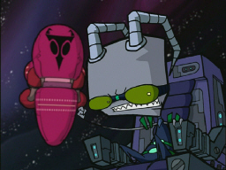
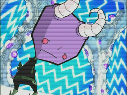
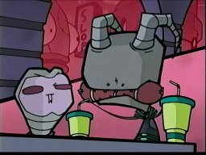
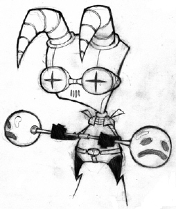
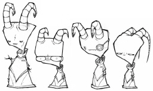

|
Race
Name: Vortians
Appearances: Backseat Drivers From Beyond the Stars -- The Frycook
What Came From All That Space -- The Trial
Home
world: Vort
Representatives: Lard Nar, Prisoner #777
|


 
|
|
A race formerly aligned with the Irken Empire, the
Vortians and their planet were conquered by Invader Larb. The Vortians are
a highly scientific race, responsible for such advancements as the
universe's most comfortable couch, the MegaDoomer, and even the Massive.
Now Vort is a military prison planet full of all the enslaved Vortians.
Many escaped by hiding in garbage tanks, undetected by the security
systems. Captain Lard Nar, a Vortian once responsible for some of the
design work on the Massive, started a resistance movement against the
Irken Empire. Zim keeps in contact with another Vortian, Prisoner 777,
another one of the design workers on the Massive. Zim got the schematics
for the Massive from him, and probably lots of his other technological
goodies as well.
In the
cancelled episode The Trial, we would have seen the Vortian
scientists who worked for the Irken Empire, including Lard Nar and
Prisoner 777 (as well as a female Vortian). We would have also seen
masked Vortian guards.
 |


{kind=link}